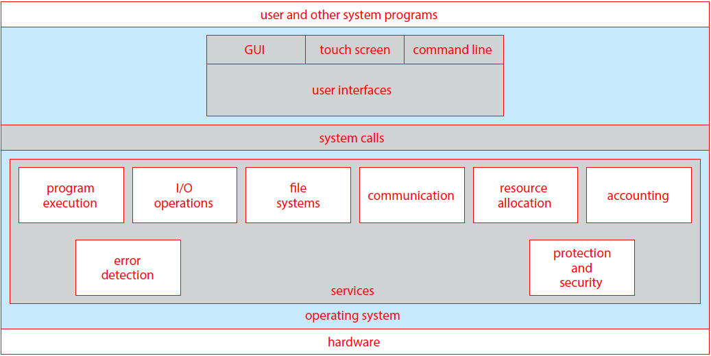
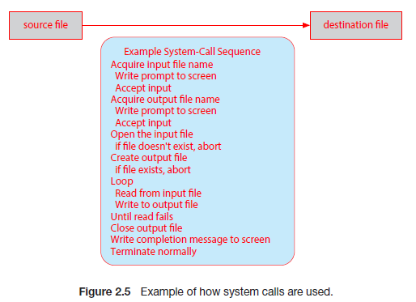
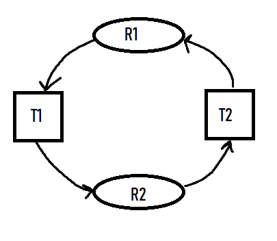
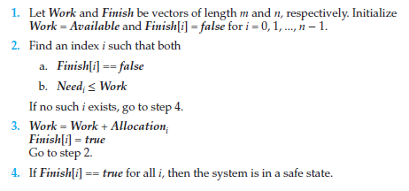
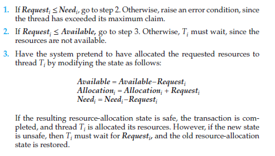
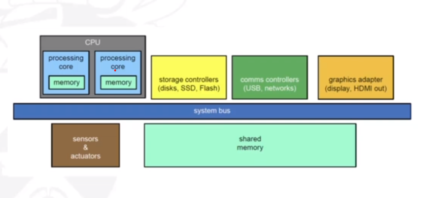
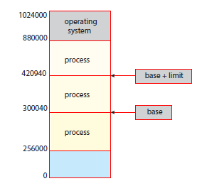
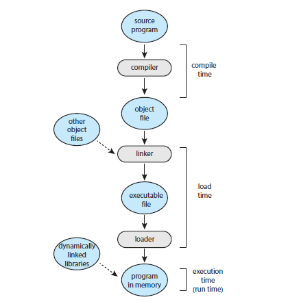

Topics:
- Operating Systems
- Processes
- Interprocess Communication
- Threads
- Process Scheduling
- Synchronisation
- Deadlock
- Memory Management
- IO Storage Management
Operating Systems
What is an operating system?
Operating systems are software that manage computer's hardware. They act as an intermediary between the computer user and the computer hardware. They also provide the basis for
application programs.
They provide:
- Memory Management
- I/O Management
- Storage Management
Why do we need operating systems?
3 Reasons:
- Convenience: computer will be easier to use
- Efficiency: allows the computer system resources to be used efficiently
- Abstraction and interoperability: allows programmers/users flexibility to use different programming languages to application development, without having to worry about hardware architecture.
There are a number of com
Types of OS
There are many different operating systems to support different computing paradigms.
For example:
- Free and open-source OS (e.g. UNIX)
- Closed source or proprietry OS (e.g. Windows)
- Hybrid approach (e.g. MacOS that has an open-source kernel but closed-source components too)
Operating System Services

There are a number of different operating system services as shown above:
- User interface: user interfaces allow the user to interact with the operating system through mouse/keyboard
- Program execution: the system must be able to load a program into memory and run it. The programm must be able to end its execution
- I/O operations: a running program may require I/O, that the operating system must allow the user to give.
- File-system manipulation: programs will need to read and write files and directories, and be able to delete them, search for them and list information.
- Communications: processes will often need to exchange information with other processes. This is done through shared memory or message passing
- Error detection: the OS needs to be detecting and correcting errors all the time.
Some of the services exist not for helping the user, but for ensuring efficcient operation of the system itself:
- Resource allocation: when multiple processes run at the same time, resources must be allocated to each of them. The OS must manage this.
- Accounting: we want to keep track of which programs use how and what kinds of computer resources. These statistics can be useful for administrators wishing to optimise comptuing services.
- Protection and security: information owners in a shared system may want to control use of the information. The OS must therefore make sure all access to system resources is controlled.
System Calls
System calls provide an interface to the services made available by an operating system, for a program, usually as functions written in C and C++. For example, cp in.txt out.txt copies the input file
to the output file. Application programmers will make use of Application Programming Interfaces (APIs). These specify a set of functions that are available to the programmer, including
expected parameters and return values. A programmer accesses the API (e.g. POSIX API) through a library of code provided by the OS. For UNIX systems with programs written in C, the library is called
libc. So, APIs are sets of functions a programmer can access, to make use of system calls. APIs are accessed by a programmer using a library that the OS provides for that language.

A system call interface is provided by the run-time nevironment (i.e. the softare needed for a program in a programming language to be executed). This serves as the link to system calls mmade available
by the operating system. Often, we need more information than just the identity of the system call. For example, to get an input file we need the name of the file. To pass parameters to the OS, usually registers
are used. However, if there are more parameters than registers, a block that stores the parameters will be passed as a parameter to a register.
Types of system calls
- Process control: These system calls include methods to create and terminate processes, load and execute them, get process attributes, wait for an event and signal for one, and allocate and free up
memory.
- File management:These include methods to create and delete files, open and close files, read, write and reposition files, and get file attributes.
- Device management: These include methods to request and release devices, read and write to them, get device attributes, and logically attach, or detach, devices.
- Information maintenance: These include methods to get and set time/date, get and set system data, get processes, files or device attributes, and set them.
- Communications: These include methods to send and recieve messages, create and delete connections, transfer status information and attach or detach remote devices.
- Protection:These include methods such as getting and setting file permissions.
System utilities
System utilities provide a convenient environment for program development and execution. Some are just interface to system calls (i.e. call a service), whereas as others are more complex.
They can be divided into these categories:
- File management: allow the user to create, delete, copy, rename, print, dump, list, and generally manipulate files and directories.
- Status information: utilities that allow the user to see system info such as date, time, available memory etc. Also for showing performance, logging
and debugging information.
- File modification: text editors allow creation and mofification of files.
- Programming language support (i.e. compilers, assemblers and debuggers)
- Program loading and execution: many different loaders are used, and debugging systems for higher-level and machine language
- Communications: allow the mechanism for creating virtual connections among processes, users, and computer systems
- Background services: these launch at boot time and provide facilities sucha s disk checking, process scheduling, and error logging
Application Programs
Operating systems also come with application programs a lot of the time that are useful for solving common problems, but don't pertain to the system.
For example, web browsers or games. These aren't considered part of the OS generally.
Application prtograms compiled on one OS are not executable on other operating systems. This is because each operating system provides its own set
of system calls. Sometimes, however, certain applications are available on multiple operating systems. This is for a few reasons:
- The application can be written in an interpreted language (e.g. Python or Ruby) that has an interpreter available for multiple OSs.
- The application can be written in a language that includes a virtual machine containing the running application e.g. Java. Java has an RTE that has been
developed for many operating systems, that can run the language on it.
- The application gets portred to each OS it will run on. This can be very time consuming and must be done for each new version.
ABIs (Application Binary Interfaces) can be used to define how different components of binary code can interface for a given OS on a given archtecture. It sepcifices
low level details such as address width, and methods of passing parameters to system calls. They are specified for a given architecture
and are therefore the architecture-level equivalent of an API.
OS Design and Implementation
Design and implementation of OS is not 'solvable' but some approaches are more successful. There are certain
user goals and system goals that need to be defined beforehand. User goals include OS convenience, how easy it is to learn, its reliableness,
safety and speed. System goals include how easy the OS is to design for, how easy it is to implement and maintain, and how flexible, reliable and error-free it is to do this.
We can use a policy and mechanism method of designign OSs. A policy is what needs to be done, and the mechanism is how to do it. The seperation of policy
from mechanism is important as it allows flexibility if policy decisions are to be changed later.
In terms of implementation, there is lots of variation. Early OS's were implemented in assembly language, then system languages like Algol, and now C/C++.
Usually, they are made of a mix of languages with the lowest in assembly, the main body in C and systems programs in C, C++ and scripting languages such as Python.
More high-level languages are easier to port to other hardware, but they are slower. Emulation allows for OSs to run on non-native hardware.
Operating System Structure
Monolithic Structure
Original UNIX had a monolithic structure. The OS consists of two seperablwe parts: systems programs and the kernel that consists of everything below the system-call interface and above
the physical hardware. It provides the file system, CPU scheduling etc
Monolithic + Modular Structure
Linux has this structure, where parts of the OS are sepeated out into modules: applications, system-call interface, device drivers, and hardware
Layered Apporach
The OS is divided into a number of layers, that are built on top of lower layers. The bottom layer (layer 0) is the hardware, the highest (N) is the user interface.
With modularity, layers are selected such that each uses functions and services of only lower-level layers.
Microkernels
This approach moves as much from the kernel into user space as possible. Mach (that Mac OS kernel, Darwin, is partly based on) is an example of a microkernel OS.
Communication takes place between user modules using message passing. Has a number of benefits such as being easier to extend and port, and more reliable.
However, there is a performance overhead of user space to kernel space communication.
Modules
Many modern OSs implement loadable kernel modules (LKMs). These use an object-oriented approach where each core component is seperate from each other. They talk to each other
over known interfaces and each is loadable as needed within the kernel. Similar to layers but more flexible (Linux uses this, as mentioned earlier)
Hybrid Systems
The majority of modern OSs are not one pure model. Hybrid systems combine multiple approaches to address different needs. Windows is mostly monolithic, but also uses a microkernel apporach for different
subsystem personalities. Apple Mac OS X is a hybrid. It is layered with an Aqua UI, with a kernel below it consisting of Mach microkernel and BSD Unix parts
as well as dynamically loadable modules.
System Boot
When the power is initalised on a system, execution starts at a fixed memory location. The OS must be made available to the hardware so the hardware can start it. A small piece of code
called the bootstrap loader (BIOS) is stored in the ROM. This locates the kernel and loads it into memory, then starts it. The root file system is then mounted.
OS Debugging
Debugging is finding and fixing errors (bugs). It is also called performance tuning. The OS generates log files that contain error information. The failure of an application
can generate a core dump file, that captures the memory of the process. Failure of the OS itself can generate a crash dump file, containing kernel memory. Performance tuning
can also optimize system performance. This is done through trace listings of activities that are recorded for analysis, and profiling that periodically samples the instruction
pointer to look for trends.
Performance Tuning
In performance tuning, we can improve performance by removinng bottlenecks in the system. This means the OS must provide a means of computing and displaying measures of
system behaviour. For example, Windows Task Manager.
Tracing
Tracing is where we collect data for a specific event, such as steps involved in a system call invocation. The tools include 'strace' - to trace system calls, 'gdb' - a source level debugger,
and 'perf' - a collection of Linux performance tools, to name a few.
Processes
Processes are...
Interprocess Communication
Interprocess communication is...
Threads
Threads are...
Process Scheduling
Process Scheduling is...
Synchronisation
Synchronisation is...
Deadlock
Deadlock is what happens when threads both use and request
resources
These can include CPU cycles, files, and I/O devices. Mutex locks and semaphores are also resources
in a circular queue. Typically, a system table records whether each resource in a system is free or allocated. For each resource
that is allocated, the table also records the thread that it is allocated to. When a thread requests a resource that is currently allocated
to another thread, it gets added to a queue of threads waiting for this resource. If every thread in the set is waiting to acquire resources
that must be released by another thread in the set then they are in a
deadlocked state.

There are
four conditions that must simultaneously
hold for deadlock to occur:
- Mutual Exclusion
At least one resource must be held in a nonsharable mode i.e. one thread at a time can use the resource. If another thread requests
it then it (the requesting thread) must be delayed until the resource has been released.
- Hold and wait
A thread must be holding at least one resource and waiting to acquire additional resources that are currently being held by other threads.
- No preemption
Resources cannot be preempted (they can only be released voluntarily by the thread holding it when its completed its task)
- Circular wait
A set {T0, T1, ..., Tn} of waiting threads must exist such that T0 is waiting for a resource held by T1, T1
is waiting for a resource held by T2, Tn-1 is waiting for Tn, and Tn is waiting for T0.
Resource-Allocation Graph
We can describe deadlocks more precisely using a directed graph called a
system resource-allocation graph consisting of vertices
V and edges E. V is split into T = {T1, T2, ..., Tn} and R = {R1, R2, ..., Rn}, the sets of threads and resource
types
respectively. We represent a resource request as a directed edge from thread Ti, to resource type Rj (Ti -> Rj). A directed
edge from resource type Rj to thread Ti, represents that a resource has been allocated to the thread (Rj -> Ti).
These edges are called
request edges and
assignment edges respectively.
The number of resources in a resource type Rj are represented graphically as a small dot '
.', as resource types
can have multiple resources available. Therefore an assigment edge must designate one of the dots.
A cycle
must have a cycle to be in a deadlocked state. If there is a cycle, then the system
may or may not be
in a deadlocked state.
Handling Deadlocks
The deadlock problem can be handled by an operating system in one of three ways:
- We can ignore the problem and pretend deadlocks never occur!
Linux and Windows use this method and therefore leave it up to kernel and application developers to
handle them.
- We can use a protocol to prevent or avoid deadlocks
Prevention -> ensure one of the necessary conditions do not hold
Avoidance -> the system is given additional information in advance concerning resources allocation so
it can be decided whether or not threads should wait when requesting a resource.
- We can allows the system to enter a deadlocked state, detect it, and then recover
Databases use this.
Deadlock Prevention
We ensure one of the necessary conditions do not hold.
-
Mutual Exclusion: we can use sharable resources, that do not require mutually exclusive access. For example,
read only files. However, this does not work as some resources are intrinisically nonsharable.
-
Hold and Wait: ensuring hold-and-wait does not occur, we must guarantee that when a thread requests a resource,
it does not hold any other resources. We could use a protocol where threads must be allocated all its resources before
it begins execution. However this is impractical due to the dynamic nature of requesting resources. This leads to low
resource utilization (since resources may be allocated but unused for a while). Also, starvation is possible as a thread
may never be allocated its resources if they are popular and always allocated to other threads.
-
No Preemption: ensuring this does not hold means adopting a protocol like the following. If a thread is holding
resources and requests another that cannot be immediately allocated, then all resources the thread is currently holding
are preempted. This means they are released, and added to the list of resources the thread is waiting for. Only when the
resources it had before, and the ones it now requires, are available can the thread be restarted.
This protocol is well suited to resources whose state can be easily saved and restored later, like CPU registers and
database transactions. It is not well-suited for resources like mutex locks and semaphores, where deadlocks occcur most
frequently.
-
Circular Wait: this conditions presents the best opportunity for preventing deadlocks. To do this, we must impose
a total ordering of all resource types, and to require that each thread requests resources in an increasing order of
enumeration.
A function will give each resource type a unique natural number (F: R -> N). Resources will be requested in an increasing
order of enumeration. So if Ri is requested, the thread can request Rj only if F(Rj) > F(Ri). If several instances of the
same resources are needed, a single request for all of them must be issued.
Deadlock Avoidance
If we can gather information about what resources that threads will use
ahead of time then we can avoid a situation in
which deadlock is possible. For example, one model requires that each thread declare the max number of resources of each type that
it may need.
Safe state
A state is
safe if the system can allocate resources to each thread (up to its maximum) in some order and still avoid a
deadlock. That is, there must exist a
safe sequence of threads, where each threads request can be satsified by the currently
available resources plus the resources held by the ones before it.
Example:
Consider the following system, with twelve resources and three threads.
| Thread |
Maximum needs |
Current needs |
| T0 |
10 |
5 |
| T1 |
4 |
2 |
| T2 |
9 |
2 |
Since 9 resources are currently being used (5+2+2), we have 3 (12-9) free resources.
A t0, the system is in a safe state as there exists a sequence <T1, T0, T2>. We immediately can allocate T1 with the 2 exta
resources it needs (giving 3-2=1 free resource), until it releases all its resources after finishing (1+4) freeing up 5 resources.
These 5 resources can then be given to T0, which then frees up 10 in total. Then 7 resources can be given to T2 which then finishes.
Now we have defined a state where deadlock cannot exist, we can create avoidance algorithms that ensure the system cannot reach
these states.
Banker's Algorithm
This algorithm is useful for when we have multiple instances of each resource type. A new type of edge is used, the
claim edge.
This edge is made before threads request resources, to indicate that the thread may request a certain resource in the future. It is
represented by a dashed line. It gets converted into a request edge when the resource is requested, and back into a claim edge after
the resource is released.
The banker's algorithm ensures that that when a new thread enters the system, it must declare the maximum number of instances
of each resource type that it may need, and cannot exceed the total number of resources in the system. When resources are requested,
the system must determine whether the allocation of these resource will leave the system in a safe state.
Several data structures must be maintained for implemenetation of the algorithm:
- Available. A vector of length m that indicates the number of available resources of each type.
- Max. An n x m matrix that defines the maximum demand of each thread. Max[i][j] = k means thread Ti may request at most
k instances of resource type Rj
- Allocation. An n x m matrix that defines the number of resource of each type currently allocated to each thread.
- Need. An n x m matrix that indicates the remaining resource need of each thread. Need[i][j] = Max[i][j] - Allocation[i][j]
The algorithm works as follows:

Essentially, it allocates all threads as 'unfinished'. When it finds a thread that has needs that can be met (i.e. its resource needs
are available) then it gets allocated the resources, and these resources then get added to 'work'. If no thread can have its need met by
the available resources, the algorithm will decide the state is unsafe.
We now need to use a resource-request algorithm, to determine whether requests can be safely granted:

Deadlock Detection
We can use algorithms to detect deadlocks, too. However, we must decide when we should invoke the detection algorith. This depends on two
factors:
- How often is a deadlock likely to occur?
- How many threads will be affected by deadlock when it happens?
Generally, if deadlocks occur freqeuntly, then the detection algorithm ought to be invoked frequently to maximise
resource utilization. Checking for deadlocks at arbritrary points in time means we cannot tell which of the many deadlocked threads 'caused'
the deadlock.
Recovery from Deadlock
There are two options for breaking a deadlock. One is simply to abort one or more threads to break the circular wait. The other
is to preempt some resources fromm one or more of the deadlocked threads.
Process and thread termination
We can either abort all deadlocked processes (will definitely break the cycle, but at great expense), or abort one process at a time
until the deadlock cycle is eliminated. The second method incurs a lot of overhead, as we need to run the deadlock-detection algorithm
every time we abort a process.
In choosing which processes should be aborted, we want the ones that will incur the minimum cost. However
minimum cost is subjective.
There are number of factors that may affect the choice of process such as:
- Process priority
- Length of time process has been computing, and how much longer is left
- How many, and types, of resources the process has used (are they simple to preempt?)
- How many mmore resources the process needs
- How many processes will need to be terminated
Resource Preemption
To eliminate deadlocks using resource preemption, we succcessively preempt (remove and give to other) resources from processes and give
these resources to other processes, until the deadlock cycle is broken.
Three issues will need to be addressed:
- Selecting a victim
Which resources and which processes are to be pre-empted? Want to minimize cost (e.g. amount of time process has thus far consumed).
- Rollback
What happens to the process? It cannot continue, so we must roll it back to some safe state and restart it from that state. Usually
it is easier to completely restart it, as determining the safe state is difficult.
- Starvation
How do we ensure starvation will not occur (resources not preempted from the same process every time)? The same victim may always be
picked if using minimum cost. We must therefore ensure a victim can only be picked a small, finite number of times. We can therefore
include the number of rollbacks in the cost factor.
Memory Management
Basics:
The only way the CPU can retrieve memory is through main memory and the registers.
The CPU fetches instructions from main memory according to the value of the program counter.

The memory in the processing cores, also called cache memory, is more difficult for the operating system to control.
The memory unit sees a stream of one of the following:
- A read request + an address (e.g. LOAD memory location '20010' into register number '8'.
- A write request + some data + an address (e.g. STORE contents of register '6' into memory location '1090'
The memory unit does not know
how these addresses get generated. Accessing the register can be done within one
CPU clock. However, main memory access may take many cycles of the CPU clock. The processor must stall as it does not have
the required data to complete the instructions it is executing.
Therefore, we use
cache memory to sit between main memory and the CPU registers to mitigate stalling.
Address Space
A (logical) address space is a range of addresses that an OS makes availible to a process. The OS enforces meemory protection.
That is, a process can only read and write witihn its address space. We must therefore seperate memory spaces which we do by
providing a range of legal addresses that the process may access. This is done through two registers, a base and a limit.
The base register holds the smallest legal physical memory address, and the limit register sepcifices the size
of the range. For example, if the base registers holds 300040 and the limit register is 120900, then the program ccan legally
access all addresses from 300040 through 420939 (base + limit) inclusive.

It is the CPUs job to check that every memory access generated in user mode is between the base and the base+limit for that
process.
There is also the issue of deciding where the program gets stored in main memory (after ist is loaded from secondary storage).
Could use address 0000 for the first physical address of a program and use that as reference, but this is impractical. Therefore
we need hardware and/or software support for memory management.
Addresses are represented in different ways at different stages of a program's life e.g. as a programmer you may use a variable name,
but the compiler will bind these symbolic addresses to relocatable addresses. The linker/loader will bind relocatable addresses to
absolute addresses.
The binding of instructions and data to memory addresses can be done at any step along the way:
-
Compile time: if you know at compile time where the process will reside in memory, then absolute code can be generated.
The code will need to be recompiled if the starting location changes at some later time.
-
Load time: if it is not known at compile time where the process will reside in memory, then the compiler must generated
relocatable code. Here, the final binding is delayed until load time. If the starting address changes, we need only to
reload the user code to incorporate this changed value.
-
Execution time: if the process can be moved during its execution from one memory segment to another, then binding must
be delayed until run time. Special hardware is needed for this scheme to work. Most OSs use this method.

I/O Storage Management
I/O Storage Management is...